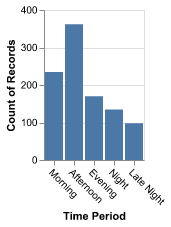
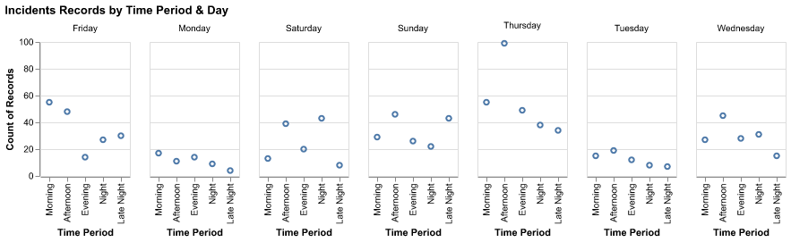
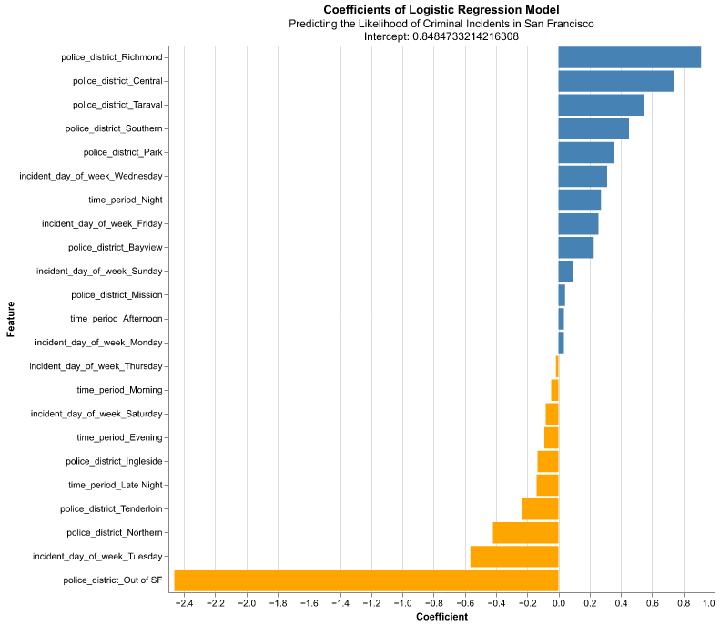

| Fit Time | Score Time | Test Score | Train Score |
|---|---|---|---|
| 0.00857844 | 0.000515461 | 0.58 | 0.58 |
Predict and Classify the Appearance of Criminal Incidents based on historical incident reports
Summary
This analysis tries to build a logistic regression model that can predict whether the incident happened will be a criminal incident or not from the incident’s time period, day of the week, and the police district. The model is built upon the 2023 San Francisco Police Department.
Introduction
Law enforcement agencies globally prioritize crime prevention and public safety. Effective policing requires strategically allocating resources to prevent crime and respond promptly to incidents (Walter L. Perry 2013). In the past, police departments have depended on experience and intuition to determine patrol schedules and allocate resources. Advancements in data analysis and predictive modeling allow law enforcement organizations to take a more data-driven strategy. Some magazines stated that usually, many police incidents take place during the day but more violent incidents happen at night (Security 2019).
Therefore, this analysis seeks to investigate the correlation between crime rates and various periods of the day (morning, afternoon, evening, night, and late night) through the analysis of 2023 police reports in San Francisco. The goal is to recognize trends that may suggest if certain time periods are linked to increased or decreased crime rates (Anthony A. Braga 2010). This information could greatly improve police patrols by helping law enforcement organizations distribute resources wisely, promoting a proactive approach to crime prevention.
Comprehending the time-related patterns of criminal behavior is essential for creating specific treatments that can decrease crime rates and enhance community security (D’Angelo 2018). This study aims to categorize time periods as having either high or low crime rates by utilizing 2023 police reports data. The goal is to provide a forecasting tool that can assist in decision-making for police patrol scheduling and resource allocation. This method has the capacity to enhance law enforcement activities and enhance public safety and security.
Our research aims to connect conventional policing approaches with current, data-driven methodologies to offer practical insights that help improve the efficiency and efficacy of crime prevention efforts.
Research Question: Given 2023 San Francisco police reports, can we predict likelihood of the criminal incidents based on time period, day of week, and police district?
Time Periods:
- Morning: 6:00am to 12:00pm
- Afternoon: 12:01pm to 6:00pm
- Evening: 6:01pm to 9:00pm
- Night: 9:01pm to 12:00am
- Late Night: 00:01am to 6:00am
Criminal Incidents: We defined criminal incidents according to the incidents’ subcategory.
criminal_incident = [“Larceny - From Vehicle”, “Vandalism”, “Larceny Theft - Other”, “Motor Vehicle Theft”, “Simple Assault”, “Drug Violation”, “Aggravated Assault”, “Fraud”, “Theft From Vehicle”, “Burglary - Other”, “Weapons Offense”, “Intimidation”, “Warrant”, “Larceny - Auto Parts”, “Other Offenses”, “Larceny Theft - From Building”, “Larceny Theft - Shoplifting”, “Robbery - Other”, “Burglary - Residential”, “Robbery - Street”, “Traffic Violation Arrest”, “Robbery - Commercial”, “Larceny Theft - Pickpocket”, “Forgery And Counterfeiting”, “Motor Vehicle Theft (Attempted)”, “Burglary - Hot Prowl”, “Prostitution”, “Burglary - Commercial”, “Disorderly Conduct”,“Arson”, “Larceny Theft - Bicycle”, “Embezzlement”, “Extortion-Blackmail”, “Sex Offense”]
Data
The data set is from the San Francisco Police Department’s(SFPD) Incident Report Dataset. The original link to the website is as follows: https://data.sfgov.org/Public-Safety/Police-Department-Incident-Reports-2018-to-Present/wg3w-h783/about_data. This original data set contains incident reports from 2018 to the present, but the link downloading the data set provides data contains 2023-specific data. These incident reports are filled by self-reported members or by officers using SFPD’s online reporting system. The data set contains 27 columns of useful information related to each specific incident, including date time, incident ID, etc .
Data Preprocessing
The original data taken from the source is messy and contains many columns that are irrelevant to our analysis, so during this proprocessing part, we firstly remove the columns that we will not use. We have only kept columns that will be used later, i.e. “incident_datetime”, “incident_time”, “incident_day_of_week”, “incident_category”, “incident_subcategory”, “police_district”.
We then extract the hour and minutes of the incidents from the “incident_time” column as we can use these information to differentiate the time periods. We create a column called “time_period” that categorize each incidents to a time period according to the previsouly identified hour and minutes.
Next, we created a column called “if_crime” to identify whether the incident is criminal or not based on our previous definition. This column is binary as 1 means “this incident is a criminal incident” and 0 means “this incident is not a criminal incident.”
Finally, we will keep the necessary columns like the following table:
| incident_day_of_week | police_district | time_period | if_crime |
|---|---|---|---|
| Monday | Out of SF | Night | 0 |
| Wednesday | Mission | Late Night | 1 |
| Monday | Northern | Morning | 1 |
We have also looked at the cardinality of our dataset, the unique value of each column, and realize that some columns in our dataset may show a class imbalance. This imbalance will be a weakness of our analysis.
Exploratory Data Analysis Visualizations

The Figure 1 depicts the distribution of incidents across different time periods, revealing a notable concentration of records in the afternoon. This observation suggests that a significant portion of incidents tend to occur during the afternoon hours.
We then look into how time period and day of the week interactively affect the number of incidents by creating the next image.

The Figure 2 illustrates that the highest number of incident records typically occurs on Thursday afternoons, which aligns with the previously presented graph. While, the lowest incidence of records is observed during Monday late nights. Notably, both Mondays and Tuesdays exhibit relatively low average incident records. In contrast, Thursdays consistently demonstrate the highest average number of crime records. These findings suggest distinct patterns in incident occurrences across different days of the week, with Thursdays standing out as particularly significant in terms of crime frequency.
Perform an Analysis
Dummy Classifier:
Logistic Regression:
| Fit Time | Score Time | Test Score | Train Score |
|---|---|---|---|
| 0.0699021 | 0.00212359 | 0.8 | 0.806786 |
Comparing the performance of a DummyClassifier in Table 1 to that of LogisticRegression in Table 2, reveals that LogisticRegression outperforms the DummyClassifier by predicting the most frequent class. However, there could be some improvements in our prediction accuracy for LogisticRegression.
| Features | Coefficents |
|---|---|
| incident_day_of_week_Friday | 0.257086 |
| incident_day_of_week_Monday | -0.0248591 |
| incident_day_of_week_Saturday | -0.100961 |
| incident_day_of_week_Sunday | 0.268792 |
| incident_day_of_week_Thursday | -0.0932274 |
| incident_day_of_week_Tuesday | -0.583675 |
| incident_day_of_week_Wednesday | 0.262755 |
| police_district_Bayview | 0.313285 |
| police_district_Central | 0.737457 |
| police_district_Ingleside | -0.161772 |
| police_district_Mission | -0.0619557 |
| police_district_Northern | -0.354096 |
| police_district_Out of SF | -2.51084 |
| police_district_Park | 0.335362 |
| police_district_Richmond | 1.10814 |
| police_district_Southern | 0.483276 |
| police_district_Taraval | 0.56179 |
| police_district_Tenderloin | -0.464741 |
| time_period_Afternoon | 0.0693196 |
| time_period_Evening | -0.0870007 |
| time_period_Late Night | -0.168627 |
| time_period_Morning | -0.063571 |
| time_period_Night | 0.235791 |
In Table 3, the coefficients indicate the influence of each feature on predicting crime occurrences.
Notably, the largest positive coefficient corresponds to ‘police_district_Mission’, suggesting its significant impact on predicting crime. Conversely, the smallest negative coefficient is associated with ‘police_district_Out of SF’, indicating its minimal impact on crime prediction.

The Figure 3 illustrates the coefficients of the features in the Logistic Regression model.
Discussion
Summarize Findings
Days of the Week: From the Figure 3, Tuesday and Wednesday show positive coefficients, suggesting a slight increase in the likelihood of incidents on these days. Conversely, Sunday exhibits a significantly negative coefficient, indicating a lower likelihood of incidents.
Police Districts: The ‘Mission’ and ‘Park’ districts display higher likelihoods of incidents with positive coefficients. In contrast, “Out of San Francisco” has a strongly negative coefficient, as expected due to its location outside the city’s jurisdiction.
Time Periods: The “Late Night” period has a positive coefficient, suggesting a higher likelihood of incidents during these hours. Conversely, “Afternoon” and “Night” have negative coefficients, indicating a lower likelihood of incidents.
Were These Findings Expected?
The results align with common expectations, such as a higher probability of incidents during late-night hours, possibly due to reduced visibility and fewer individuals present. The substantial negative coefficient for instances labeled ‘Out of SF’ is reasonable and highlights the model’s emphasis on geographical significance. The varied effects of different days of the week and police districts may indicate complex social and environmental factors influencing crime rates.
Impact of Findings
Analyzing time and location trends of criminal episodes can aid in strategic planning for law enforcement by optimizing resource allocation and establishing focused preventative strategies. These insights can inform safety alerts and enhance community policing efforts.
Future Questions
In-depth Examination of Districts: What factors contribute to higher occurrence probabilities in specific districts? Further exploration could consider socio-economic
References
Anthony A. Braga, David L. Weisburd. 2010. Policing Problem Places: Crime Hot Spots and Effective Prevention. Oxford University Press.
D’Angelo, Stephen. 2018. “Criminal Behavior Linked to Thinking about Risk, Study Finds.” https://news.cornell.edu/stories/2018/09/criminal-behavior-linked-thinking-about-risk-study-finds.
Security. 2019. “Violent Crimes Most Likely to Occur at Night.” https://www.securitymagazine.com/articles/90384-murder-robbery-and-driving-while-impaired-happen-at-night.
Walter L. Perry, Carter C. Price, Brian McInnis. 2013. Predictive Policing: The Role of Crime Forecasting in Law Enforcement Operations. RAND Corporation.